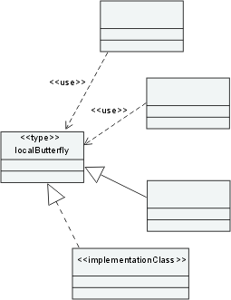
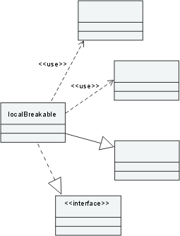

| Рекомендация: Architectural Discovery, Analysis and Control |
 |
|
| Связанные элементы |
|---|
IntroductionIn several tasks in RUP, we canvass the need to examine the emerging Design Model, make judgments about various quality aspects, and then, if necessary, refactor the model. It is also important to be able to maintain the architectural integrity of a system once it has moved into implementation, to ensure architectural and design constraints are not violated and that the system, as implemented, continues to align with the architectural vision. In RUP, these major checkpoints occur in the Tasks: Review the Architecture, review_the_design_gui_design and Review Code. A different, but allied, problem arises during architectural and design synthesis: in the Tasks: Architectural Analysis (see Develop Architecture Overview and Survey Available Assets) and Incorporate Existing Design Elements, the Software Architect is advised to look for opportunities to reuse existing design and code assets, incorporating them into the Design Model, after reverse-engineering, if necessary. Unless the reused assets come with some type of quality certification, the Software Architect will want to subject them to the same scrutiny as newly created design and code. In both cases, the consequential needs of the Software Architect are the same for this static analysis:
In theory, these needs could be fulfilled through inspection; in practice, for larger, more complex systems, some type of automated assistance is essential. The following sections provide some elaboration of these topics and examples of tool support. Architecture Discovery and RecoveryBackgroundIn Greenfield development, software architecture emerges from the requirements and the domain context and conventions (including patterns and mechanisms); the Supplementary Specifications artifact has an important role in determining the architecture. This process of shaping the software architecture is sometimes called discovery, because there is rarely a straightforward, mechanical mapping from requirements to architecture. Here, however, we are using discovery in a different sense, to describe the process of helping the Software Architect understand an existing application or application fragment in coded form. Architectural recovery is more ambitious: through recovery, not only does the Software Architect seek to understand an application, but also to extract a model of that application, ideally at a level of abstraction compatible with the Design Model. The possibility then exists of merging these models and, through Term Definition: transformation, generating a new application, perhaps for a different Term Definition: platform. DiscoveryIn the Tasks: Architectural Analysis (see Develop Architecture Overview and Survey Available Assets) and Incorporate Existing Design Elements, the Software Architect looks for opportunities to reuse existing design and code assets. For example, an organization might have several Reference Architectures in its asset base, and ideally these are complete with up-to-date documentation and models. However, often there is little more than source code and, if there is architectural documentation, it is not current.
In many cases, the Software Architect cannot treat such code as a black box (even if the interfaces are clearly
defined) but needs to understand its structure. This process is greatly assisted by the ability to automatically
generate browsable depictions of the code. The Software Architect can then visually 'discover' patterns and
antipatterns in the code. An example of this kind of assistance is found in the Rational Software Architect tool, where
the architecture discovery capability will automatically populate topic diagrams, such as package structure, class
internals, inheritance trees, and collaborations, for Java applications. For more information, see Recovery and TransformationWhen reusable assets are complete with models, it is possible to combine those models with project-specific models and then proceed into platform-specific implementation using transformation techniques. When code is all that exists, it might still be possible to reuse it even with a transformation-based approach by integrating the code produced from transformation with the legacy code. The Software Architect has most power and flexibility through the use of architecture recovery: recovery capability will generate a semantically-rich model of the application, which can be used for code generation as well as for browsing. In practice, reverse-engineering code back to a straightforward visual representation is often tractable; abstracting such a model back to the same level as a Term Definition: platform independent model Design Model is, in general, difficult to automate completely. This is essentially a Term Definition: platform specific model to Term Definition: platform independent model transformation (see Concept: Model-Driven Development (MDD) and Model Driven Architecture (MDA )); the recovered PIM (fragment) is then combined with the Design Model (itself a PIM) using a model merge (see [OMG03]) type of transformation. Analysis of ArchitecturesHaving browsable models allows the Software Architect to verify architectural quality through inspection. However, this can be tedious and time-consuming, and checking standards and rules compliance and gathering metrics this way is error prone. The Software Architect should look to automate as much as possible of this process, and thereby spend more time finding and applying remedies; automation allows the Software Architect to experiment, to ask "what if" and quickly check the result. What Can Be Automated?Automated architectural analysis can:
Term Definition: pattern is dictated by project and organization standards, and the rationale for their use is captured in the Software Architecture Document (if they have architectural significance) or the Design Guidelines. Through automated analysis, the Software Architect can quickly check pattern usage, to verify that the intent of the Software Architecture Document and the Design Guidelines is met. Antipatterns are pathological architectural and design structures that in some way weaken the architecture, by making it less robust, more complex, or more difficult to maintain, for example. The measurements to be performed are called out in the Work Product: Measurement Plan (some suggested metrics are to be found in Guideline: Metrics). The Measurement Plan also describes how a metric is to be used, for example, whether higher or lower values are better or whether it is the trend that is important, so it is useful to have the metrics analysis also identify hot spots - places in the architecture where change would yield significant improvement in the collected metrics. Not surprisingly, these will often be associated with pathologies in the structure. The Software Architect then has an objective basis for improvement, can make changes, or delegate follow-up actions that can be tested once complete. What Is the Target of Analysis?The target of analysis can vary through the lifecycle, depending on the development approach chosen. When a project uses a transformational (generational) approach, the target will normally be the Design Model, on the assumption that the generated application is always synchronized with the design. When an Artifact: Implementation Model is created and separately maintained, or when code is reused, focus shifts to the code, to ensure it retains architectural integrity when measured against the Software Architecture Document and the Design Guidelines. This type of analysis (on an Implementation Model) might not actually recover an explicit Design Model from the code, for analysis purposes; it is, nevertheless, concerned with architecture and design issues (as they are manifest in the code), not coding standards. An Example of these Concepts and CapabilitiesThe Rational Software Architect tool, in addition to its ability to recover documentation for Java applications through architecture discovery, can identify and report against a set of pre-defined patterns that could indicate potential trouble spots in the architecture. These patterns include, among others:
The ButterflyA butterfly is an element, such as a class, that has many relationships with other dependent elements, which would be affected if the butterfly were changed. If the relationships are direct, these elements are called local butterflies. Rational Software Architect can also trace relationships as they cascade through an application and determine if changes to an element could affect not only the direct dependents, but their dependents in turn, and so on transitively through the entire application. Such an element with many indirect dependencies is called a global butterfly. An illustration of a local butterfly is shown below. The diagram also shows that the relationships can be other than UML dependencies: for example, an element is dependent on another when it realizes it; a change in the specifying element will affect the element that realizes it.  A Local Butterfly The BreakableA breakable is an element that has many dependencies; that is, it has many relationships where it depends on another element. A change to any of those other elements will affect the breakable. As with butterflies, when the relationships are direct these elements are called local breakables, and global breakables if there are many indirect relationships that impact the element. A global breakable is vulnerable to changes in many parts of an application and indicates a lack of modularity. An illustration of a local breakable is shown below.  A Local Breakable The HubA hub is an element that combines the characteristics of a butterfly and a breakable. It also has local and global forms. The presence of global hubs is an indication of poor partitioning, resulting in software that is extremely sensitive to change-changes tend to ripple through the entire application. The TangleA tangle is a large group of elements whose relationships are so convoluted that a change in any one of them could affect all of the others. Such structures are a source of major instability.
The Software Architect, working with the Rational Software Architect tool, can discover these hot spots quickly and
work with the Designer to rectify them. For more information, see TimingThe results of these analyses are valuable at any review milestone, as objective and quantifiable evidence of architectural and design quality, or when, as in Update the Organization of the Design Model (in Task: Incorporate Existing Design Elements) there are significant architectural changes. Architectural ControlThe vision of the Software Architect is captured in the Software Architecture Document and practical guidance for the Designer is found in the Design Guidelines. Even when that vision is shared by all staff, it is sometimes obscured by the day-to-day exigencies of project work. With deadlines to meet, corners might be cut, and the Software Architect usually cannot participate in every decision. So arises the issue of control: just as the Project Manager has to set thresholds and limits and monitor them (see Task: Monitor Project Status), the Software Architect has an analogous task for the emerging software design and implementation. Architectural control gives the Software Architect the capability to create rules to enforce architectural constraints. For example, the Software Architect might define a rule that would raise a warning on every realization of a particular interface. The simple expression of this rule without tool support would require more or less constant review to catch breaches. With automation, the rules can be encoded so that violations of the ruleset can be caught during architecture analysis. This is still occurring after the fact, and an advanced control environment would encode the rules into the design and code production process, preventing them from being broken in the first place; even so, it greatly improves the manual review process.
The Rational Software Architect tool includes such a capability for Java applications: the Software Architect can set
rules and then run analyses to verify compliance. For more information, see |
© Copyright IBM Corp. 1987, 2006. Все права защищены.. |